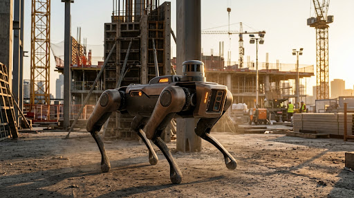

안전모를 벗은 그 순간, 피지컬 AI가 먼저 봅니다
테라가드 PPE 순찰 로봇은 건설현장을 스스로 돌며 작업자의 안전모·안전조끼 착용 여부를 로봇 안의 Edge AI로 판정합니다. 미착용을 발견하면 그 자리에서 음성과 경광등으로 안내하고, 3초 안에 위치와 증빙 사진을 관리자에게 보냅니다.

≥ 95%
미착용 판정 Recall 목표
2~3m
작업자 앞에서 정지 후 음성 안내
※ 이미지는 컨셉 시안입니다. 실제 제품은 4륜 UGV 플랫폼으로 개발됩니다.
BUSINESS TARGET // 도입 6개월 시점 목표
현장 보호구 착용률
관리자 착용 점검·기록 시간
미착용 알림 → 시정 완료
담당 구역당 점검 횟수
미착용은 순찰과 순찰 사이,
짧은 틈에 일어납니다
보호구 미착용은 건설현장 사고에서 반복적으로 지적되는 원인입니다. 특히 안전모 미착용은 추락·낙하물 사고 때 머리 중상으로 이어집니다. 작업 구역이 10곳이 넘는 대형 현장에서 안전관리자 2~3명이 모든 작업자를 계속 지켜볼 수는 없습니다. "잠깐 벗은 상태", "순찰자가 지나간 직후"처럼 짧은 틈은 정기 순찰로 잡아내기 어렵습니다.
관리자 도보 순찰
순찰 사이에 공백이 생기고, 관리자 시야 밖 구역은 점검할 수 없습니다. 기록도 수기로 남습니다.
출입구 게이트 점검
출입할 때만 확인할 수 있어, 작업 중 보호구를 벗는 경우는 알 수 없습니다.
고정식 CCTV
사각지대가 있고, 공정이 바뀔 때마다 설치 위치를 옮겨야 합니다. 사람이 직접 보지 않으면 쓸모가 없습니다.
센서 내장 스마트 안전모
모든 안전모를 바꿔야 해 단가 부담이 크고, 조끼 같은 다른 보호구는 확인할 수 없습니다.
왜 AI가 필요한가요?
- check안전모·조끼의 색상, 모양, 착용 각도, 역광·분진·비 같은 조건이 제각각이라 색상 필터 같은 규칙 기반 영상 처리로는 안정적으로 판별하기 어렵습니다.
- check"사람의 머리 위치에 안전모가 없다"는 판단은 사람 검출과 보호구 검출을 공간적으로 연결하는 딥러닝 객체 인식이 필요합니다.
- check영상을 모두 서버로 보내면 지연과 통신비가 커집니다. 그래서 로봇 안에서 Edge AI로 추론하고 이벤트만 전송합니다.
감지하고, 판단하고, 행동합니다
설치 하루면 순찰을 시작합니다. 이후 로봇은 정해진 경로를 반복해서 돌며 같은 사이클을 스스로 수행합니다.
감지
로봇이 웨이포인트를 따라 자율 주행하며 PTZ RGB 카메라로 1080p, 15 FPS 이상의 영상을 받습니다. 구역마다 멈춰 좌우를 훑은 뒤 이동합니다. LiDAR는 주행과 장애물 회피에만 씁니다.
판단
Edge AI가 작업자·안전모·조끼를 검출하고, 작업자마다 추적 ID를 붙입니다. 머리 영역에 안전모가, 상체에 조끼가 있는지 판정합니다. 오판을 줄이려고 3~10m 거리의 작업자만 판정하며, 연속 5프레임 이상 미착용이면 이벤트로 확정합니다.
행동
작업자 2~3m 앞에 멈춰 경광등을 켜고 "안전모를 착용해 주세요"라고 안내합니다. 동시에 MQTT로 이벤트를 보내 관리자에게 알립니다. 30초 뒤 다시 촬영해 착용을 확인하고 순찰을 이어갑니다.
USER SCENARIO // 대형 아파트 신축 현장, 안전관리자 1명이 12개 구역 담당
-
STEP 01
설치
도면 업로드, 순찰 경로 1회 주행 저장, 점검 시간대 설정
-
STEP 02
데이터 수집
자율 순찰하며 PTZ 카메라로 실시간 영상 입력
-
STEP 03
분석
작업자·보호구 검출, 추적 ID 부여, 착용 판정
-
STEP 04
판단 결과
등급·위치·증빙 이미지로 이벤트 생성, 10분간 중복 억제
-
STEP 05
제어
정지 → 경광등·음성 안내 → 알림 → 30초 후 재확인
-
STEP 06
후속 조치
대시보드에서 조치 상태 기록, 주간 착용률로 TBM 교육
로봇의 눈으로 본 현장
로봇 안의 Edge AI는 작업자마다 추적 ID를 붙이고, 머리와 상체 영역에서 보호구 착용 여부를 판정합니다. 증빙 이미지에는 얼굴 블러가 적용됩니다.
※ 판정 화면을 설명하기 위한 시뮬레이션입니다.
점검부터 조치 기록까지, 한 대로
순찰하고, 판정하고, 알리고, 기록하는 일을 로봇과 웹 대시보드가 나눠 맡습니다.
자율 순찰 주행
웨이포인트 기반으로 같은 경로를 반복 순찰합니다. 장애물을 피해 가며, 배터리가 떨어지면 충전 도크로 스스로 돌아갑니다. ROS 2 Nav2와 SLAM Toolbox로 실내외를 주행합니다.
Edge AI 착용 판정
YOLO 기반 3클래스(작업자·안전모·조끼) 검출, ByteTrack 추적, 공간 관계 규칙 엔진으로 판정합니다. 판정 근거를 설명할 수 있습니다.
현장 즉시 경고와 재확인
작업자 가까이에서 경광등과 음성으로 착용을 안내하고, 30초 뒤 다시 촬영합니다. 착용이 확인되면 이벤트가 자동으로 종결됩니다.
관리자 알림과 웹 대시보드
카카오 알림톡·문자·웹 푸시로 위치, 등급, 증빙 사진을 보냅니다. 확인하지 않으면 한 번 더 알립니다. 대시보드에서 로봇 상태와 이벤트를 보고 "확인 → 조치중 → 조치완료"로 기록합니다.
착용률 리포트
구역·시간대·협력사별 착용률을 일간·주간 리포트로 자동 생성합니다. 작업 전 안전회의(TBM) 교육 자료로 바로 쓸 수 있습니다.
개인정보 보호와 안정성
얼굴 인식은 하지 않고 위치·시각으로만 기록합니다. 증빙 이미지는 얼굴을 블러 처리해 90일 후 자동 삭제합니다. 네트워크가 끊겨도 로컬에 저장했다가 다시 보내 이벤트를 잃지 않습니다.
현장을 견디는 하드웨어, 검증된 소프트웨어
비포장·분진 환경에서 가격, 배터리, 유지보수 면에서 현실적인 구성을 골랐습니다.
견고형 4륜 UGV
IP65 이상 방진·방수, 15° 경사 주행. 모터·비상정지(E-Stop)·경광등은 STM32 MCU가 상위 컴퓨터와 분리해 실시간 제어합니다.
1080p PTZ RGB 카메라
저조도·역광에 강한 Sony STARVIS 계열 센서. PTZ로 멀리 있는 작업자도 확대해서 촬영합니다.
3D LiDAR · IMU · 초음파
Ouster/Livox 계열 3D LiDAR로 실내외 SLAM과 장애물 회피를 합니다. 보호구 판정에는 쓰지 않습니다.
NVIDIA Jetson Orin NX 16GB
TensorRT FP16으로 최적화한 모델을 로봇 안에서 실행합니다. 영상은 내보내지 않고 이벤트만 전송합니다.
소프트웨어 · 인프라 스택
PRD v1.1| 구성 | 사용 기술 | 선정 이유 |
|---|---|---|
| 로봇 SW | ROS 2 Humble, Nav2, SLAM Toolbox | 자율주행 표준 스택, 개발 인력 확보 용이 |
| AI 모델 | YOLOv8/YOLO11 3클래스 + ByteTrack + 규칙 엔진 | 실시간성과 정확도의 균형, 중복 알림 방지, 판정 근거 설명 |
| 학습 · 배포 | PyTorch, ONNX → TensorRT, CVAT, MLflow, OTA | 학습-변환-배포 파이프라인 표준화, 원격 업데이트 |
| 통신 | 5G/LTE + MQTT(TLS), 현장 Wi-Fi 6 메쉬 | 저대역폭·불안정한 망에 적합 |
| 서버 · DB | AWS(EC2/EKS, S3), Docker, PostgreSQL, Redis | 이벤트는 관계형 DB, 증빙 이미지는 S3에 분리 저장 |
| 대시보드 · 알림 | React + TypeScript, Grafana, 카카오 알림톡/SMS, 웹 푸시 | 앱 설치 없이 PC·태블릿에서 접근, 가장 빨리 확인하는 채널 |
숫자로 약속하는 성능 목표
3~10m 거리의 현장 검증셋 2,000장 이상과 주간·역광·우천·분진 시나리오 테스트로 측정합니다.
neurologyAI 성능
- 작업자 검출 Recall
- ≥ 97%
- 안전모 검출 mAP@0.5
- ≥ 0.93
- 안전조끼 검출 mAP@0.5
- ≥ 0.90
- 미착용 판정 Recall / Precision
- ≥ 95% / ≥ 90%
- 오탐 알림
- ≤ 3건 / 로봇 / 일
settings_suggest시스템 · 운영
- 이벤트 확정 → 알림 도달
- ≤ 3초
- Edge 추론 속도
- ≥ 15 FPS
- 1회 충전 연속 운용
- ≥ 4시간
- 네트워크 단절 시 이벤트 유실
- 0%
- 관리자 알림 확인 응답 (중앙값)
- ≤ 5분
필터보다 먼저,
원본 해상도를 지킵니다
720p 카메라로 10~20m 거리를 찍으면 안전모는 13~25px 정도입니다. 입력을 640으로 줄이는 순간 검출 한계 아래로 떨어지기 때문에, 어떤 필터를 고르느냐보다 해상도를 지키는 것이 더 중요합니다.
데이터 전처리 설계 보고서 · 2026-10-07 · 이채원
결정적 전처리는 두 가지만
원본 기준 품질 게이트(블러·과노출 선별)와 LAB L 채널 CLAHE만 학습과 추론에 똑같이 적용합니다.
열화는 지우지 않고 학습시킵니다
비·눈·먼지·블러는 복원 필터로 지우지 않고 증강으로 넣어 모델이 견디게 합니다. Dehaze와 De-rain은 기본 파이프라인에서 뺍니다.
리사이즈는 마지막에, 축소 없이
imgsz 1280으로 처리하거나 640 타일 2장으로 나눠, 원거리 안전모 픽셀을 살립니다.
현장 환경 분석
거리별 객체 크기
1280×720, 수평 화각 70° 기준
| 거리 | 작업자 | 안전모 | 안전화 |
|---|---|---|---|
| 10m | 약 155px | 약 25px | 약 11px |
| 15m | 약 104px | 약 17px | 약 7px |
| 20m | 약 78px | 약 13px | 약 6px |
화면 폭은 10m에서 14m, 20m에서 28m입니다. 안정적인 검출에는 보통 20~32px 이상이 필요하며(빨간색은 미달), 640으로 축소하면 위 수치가 절반이 됩니다.
데이터 품질 핵심 문제 (우선순위 순)
-
1
원거리 소형 객체 — 안전모 13~25px, 안전화는 검출 불가 수준
→ 원본 해상도 유지, 타일링, 리사이즈는 마지막 E2 · G4 · G5 · F1
-
2
올려다보는 시점 + 역광 + 흰 안전모 + 눈 + 머리 그림자 — 머리 영역 밝기 편차가 큼
→ L 채널 CLAHE, 그림자·플레어 증강 G2 · B3 · B7 · F2 · C2
-
3
혼동 객체와 라벨 모호성 — 형광 작업복, 안전망, 주황 콘, 바닥 안전모, 방한복
→ 사람 단위 판정, Hard Negative, 라벨 규칙 명문화 D2 · E6
-
4
프레임 품질 저하 — 자갈길 진동, 비·눈, 렌즈 오염, 간헐적 섬광
→ 품질 게이트, 최선 프레임 선택, 열화 증강 A3 · C2 · C4 · B6 · G6
-
5
클래스 불균형(미착용 1~10%) + 보유 데이터 없음
→ 반복 샘플링, Copy-Paste, 날짜 단위 분할 F5 · I2
전처리 설계 원칙
모든 기법 선택과 순서는 아래 다섯 원칙에서 나왔습니다.
정보 손실은 가장 나중에
리사이즈와 압축은 되돌릴 수 없어서 보정과 측정을 모두 끝낸 뒤에 둡니다.
측정은 원본에서
블러·과노출 같은 품질 지표는 보정을 거치면 왜곡되므로, 측정 후에 보정합니다.
지우지 말고 견디게
복원 필터는 무겁고 새 아티팩트를 만듭니다. 학습 시 증강으로 넣는 편이 싸고 안전합니다.
학습 = 추론
결정적 전처리는 바이트 단위로 같아야 합니다. 공통 모듈 하나를 두 곳에서 불러 씁니다.
색을 지킵니다
흰 안전모·형광 조끼는 색 자체가 단서입니다. 밝기(L)만 다루고 a·b 채널과 Hue는 거의 건드리지 않습니다.
학습용 전처리 11단계
1~5단계는 데이터를 정제하고, 6~7단계는 라벨과 분할을, 8~11단계는 모델 입력을 만듭니다.
| # | 기법 | 적용 이유 (현장 근거) | 추천 초기값 | 비용 |
|---|---|---|---|---|
| 정제 · STEP 1–5 | ||||
| 1 | 프레임 샘플링 + 중복 제거 (pHash/SSIM) | 저속 주행(G7)이라 연속 프레임이 거의 같습니다. 라벨링 비용과 데이터 누수를 줄입니다. | 30fps → 2fps, pHash 해밍거리 ≤ 6이면 중복 | 경량 |
| 2 | 원본 기준 품질 태깅 ★ | 자갈길 진동(A3), 섬광(B6), 렌즈 오염(C4)으로 못 쓰는 프레임을 찾습니다. | Laplacian 분산 < 60 → blur 포화 픽셀(≥ 250) > 15% → flash | 경량 |
| 3 | 태그 기반 선별 | 심한 프레임은 라벨 품질을 떨어뜨리고, 경미한 것은 강건성을 위해 남깁니다. | 심각 → 제외, 경미 → 약 10~15% 유지 | 경량 |
| 4 | (선택) 약한 Gray-World 화이트밸런스 | 자연광만 있어 편차는 작습니다(B4). 흰 안전모·눈이 기준점을 망치지 않게 약하게만 씁니다. | 포화 영역(≥ 240) 제외, 원본과 50:50 블렌드 | 경량 |
| 5 | CLAHE (LAB의 L 채널) ★ | 역광(B3)과 머리 그림자(B7)로 머리 영역 밝기 편차가 큽니다. 지역 보정이 필요하고 색은 유지됩니다. | clipLimit 2.0, tileGrid 8×8 | 경량 |
| 라벨 · 분할 · STEP 6–7 | ||||
| 6 | 라벨링 (바운딩 박스) | 보정된 이미지에서는 그림자 속 머리도 잘 보여 라벨 품질이 올라갑니다. | 아래 클래스 정의 참고 | 수작업 |
| 7 | 날짜·구역 단위 분할 | 보유 데이터가 없어(I2) 같은 날 프레임이 train과 test에 섞일 위험이 큽니다. | 70 / 15 / 15, 날짜별 그룹 | 경량 |
| 모델 입력 · STEP 8–11 | ||||
| 8 | 고해상도 유지 / 타일링 ★ | 20m 안전모(약 13px)를 살리려면 축소하면 안 됩니다(E2). | imgsz 1280, 또는 640 타일 2×1 겹침 20% | 중간 |
| 9 | 열화 증강 (train만) | 비·눈(C2), 먼지(C1), 렌즈 오염(C4), 그림자(B7), 역광(B3), 진동 블러(A3)를 견디게 합니다. | 아래 증강 목록 참고 | 중간 |
| 10 | 불균형 대응 | 미착용 1~10%(F5)라 모델이 "항상 착용"으로 치우칩니다. | 미착용 이미지 ×3~5 반복, Copy-Paste, Focal loss γ=1.5 | 경량 |
| 11 | Hard Negative 추가 | 주황 콘, 형광 안전망, 바닥 안전모(D2), 형광 작업복(E6) 오탐을 줄입니다. | 전체의 10~20% | 수작업 |
★ 표시 단계는 추론에서도 같은 설정, 같은 코드로 실행합니다.
label클래스 정의
- chevron_right바닥에 놓인 안전모는 라벨하지 않습니다. 사람 머리 영역에 있을 때만 착용으로 인정합니다.
- chevron_right안전화는 10m 이내만 라벨하고, 높이 8px 미만은 ignore로 처리합니다.
- chevron_right방한복 위에 조끼를 입으면 vest, 방한복이 조끼를 덮으면 no_vest입니다.
thunderstorm열화 증강 목록 (Albumentations 2.x)
| 현장 조건 | 증강 | 확률 |
|---|---|---|
| 머리 그림자 (B7) | RandomShadow, 화면 상단 60% | 0.3 |
| 역광 (B3) | RandomSunFlare, 상단 40% | 0.1 |
| 밝기 변화 | RandomBrightnessContrast ±0.25 | 0.5 |
| 비·눈·먼지·렌즈 오염 (C1, C2, C4) | OneOf: RandomRain / RandomSnow / RandomFog / Spatter | 0.35 |
| 진동 블러 (A3, E5) | OneOf: MotionBlur 3~9 / GaussianBlur 3~5 | 0.25 |
| 부분 가림 (E4) | CoarseDropout, 구멍 1~4개 | 0.3 |
| 색 유지 (F2, F3) | HueSaturationValue, hue ±5로 제한 | 0.3 |
| 전송 압축 (H4) | ImageCompression, 품질 60~95 | 0.3 |
추론용 전처리
추론 위치와 디바이스(H1, H2)가 미정이라 Jetson Orin NX 16GB + TensorRT FP16을 기준으로 가정했습니다.
50~80ms
1초
1280×736
5회 중 3회
| # | 기법 | 적용 이유 (현장 근거) | 추천 초기값 | 시간 예산 |
|---|---|---|---|---|
| 0 | 카메라 설정 (하드웨어) | 블러와 역광은 촬영 단계에서 막는 것이 가장 쌉니다(A3, B3). | 셔터 ≤ 1/500s, WDR 켜기, 측광 영역을 화면 상단 중앙으로 | 0ms |
| 1 | 최선 프레임 선택 | 1초 여유로 자갈길 진동 프레임을 피합니다. 영상 안정화보다 싸고 효과가 확실합니다. | 0.3초 버퍼(약 9프레임)에서 Laplacian 분산 최대 | 약 5ms |
| 2 | 품질 게이트 ★ | 섬광(B6)이나 렌즈 오염(C4) 프레임은 추론하지 않고 건너뜁니다. | 포화 > 15% → skip, 오염 점검은 10초마다 | 약 2ms |
| 3 | CLAHE (L 채널) ★ | 학습과 같은 분포를 만듭니다. 설정이 다르면 성능이 떨어집니다. | clip 2.0, tile 8×8 (학습과 동일) | 약 3~5ms |
| 4 | Letterbox 1280 (또는 2타일) ★ | 원본을 축소하지 않아 원거리 안전모를 살립니다(E2). | 1280×736 | 약 1ms |
| 5 | 검출 모델 | — | YOLOv8s/11s @1280 | 약 30~60ms |
| 6 | 사람–보호구 연결 | 바닥 안전모와 주황 콘 오탐(D2)을 없앱니다. | 머리 박스가 사람 박스 상단 25% 안에 있을 때만 인정 | 1ms 미만 |
| 7 | 시간축 투표 + 추적 | 한 프레임 오판으로 경보가 울리지 않게 하고, 비·눈 프레임의 일시적 오류도 흡수합니다. | ByteTrack ID 기준, 최근 5회 중 3회 이상 미착용이면 경보 | 약 2ms |
code공통 전처리 코드 (학습·추론 동일 모듈) expand_more
import cv2
import numpy as np
CLAHE = cv2.createCLAHE(clipLimit=2.0, tileGridSize=(8, 8))
def blur_score(bgr):
# 반드시 원본에서 계산
gray = cv2.cvtColor(bgr, cv2.COLOR_BGR2GRAY)
return cv2.Laplacian(gray, cv2.CV_64F).var()
def saturation_ratio(bgr, thr=250):
gray = cv2.cvtColor(bgr, cv2.COLOR_BGR2GRAY)
return float((gray >= thr).mean())
def clahe_l(bgr):
lab = cv2.cvtColor(bgr, cv2.COLOR_BGR2LAB)
l, a, b = cv2.split(lab)
return cv2.cvtColor(cv2.merge([CLAHE.apply(l), a, b]), cv2.COLOR_LAB2BGR)
def preprocess(bgr):
# 리사이즈·타일링은 이 함수 다음에
return clahe_l(bgr)측정 → 색 → 밝기 → 크기 → 증강
앞쪽일수록 정보를 보존하는 단계이고, 뒤쪽일수록 정보를 바꾸거나 줄이는 단계입니다. 각 단계는 앞 단계의 결과가 있어야 제대로 동작합니다.
-
STAGE 1 · 측정
원본 그대로 측정
중복 제거 → ★ 품질 게이트
arrow_forward -
STAGE 2 · 보정
색 먼저, 밝기 다음
화이트밸런스 → ★ CLAHE (L 채널)
arrow_forward -
STAGE 3 · 고정
보정본으로 라벨·분할
라벨링 → 날짜별 분할
arrow_forward -
STAGE 4 · 변형
되돌릴 수 없는 단계
★ 리사이즈·타일 → 증강 (train만)
★ 세 단계(품질 게이트 · CLAHE · 1280 유지)는 추론에서도 학습과 똑같은 설정의 같은 코드로 실행합니다. 나머지는 학습 데이터를 만들 때만 씁니다.
단계별 의존 관계 자세히 보기 expand_more
| 단계 | 이 위치여야 하는 이유 | 앞에 와야 하는 것 |
|---|---|---|
| 중복 제거 | 데이터 양을 줄여 이후 모든 단계의 비용을 낮춥니다. 분할보다 앞서야 누수가 없습니다. | 없음 (항상 처음) |
| 품질 게이트 | 블러·포화 지표는 원본에서만 정확합니다. 나쁜 프레임을 미리 빼면 보정 비용도 줄어듭니다. | 중복 제거 |
| 화이트밸런스 | 색 채널 비율을 바로잡는 일이라, 밝기 보정 뒤에 하면 바뀐 히스토그램을 기준으로 삼게 됩니다. | 품질 게이트 (섬광 프레임 제거) |
| CLAHE | 색이 바로잡힌 뒤 L 채널만 다뤄야 색상이 흔들리지 않습니다. 전체 해상도에서 해야 타일 간 밝기가 일정합니다. | 화이트밸런스 |
| 라벨링 | 보정된 이미지에서 그림자 속 머리가 보여 라벨이 정확해집니다. | CLAHE |
| 리사이즈·타일링 | 되돌릴 수 없는 정보 손실이라 보정과 측정이 모두 끝난 뒤에 합니다. | CLAHE, 라벨링 |
| 열화 증강 | 학습 직전에 매번 무작위로 적용합니다. train에만 적용하려면 분할이 먼저여야 합니다. | 분할, 리사이즈 |
warning순서를 바꾸면 생기는 문제
| 잘못된 순서 | 생기는 문제 | 이 현장에서의 영향 |
|---|---|---|
| CLAHE → 품질 게이트 | CLAHE가 노이즈를 키워 Laplacian 분산이 올라갑니다. 흐린 프레임이 선명한 것처럼 통과합니다. | 자갈길 진동 프레임이 학습에 섞입니다. |
| Dehaze → 화이트밸런스 | Dark Channel Prior는 가장 밝은 픽셀로 대기광을 추정해, 흰 안전모·눈이 대기광으로 잡혀 색이 틀어집니다. | 흰 안전모(F2)가 회색·푸른빛으로 변합니다. |
| 리사이즈(640) → 보정 | 이미 사라진 픽셀은 보정으로 돌아오지 않습니다. | 20m 안전모가 약 6px이 됩니다. |
| 타일 분할 → CLAHE | 타일마다 히스토그램이 달라 같은 사람이 경계에서 밝기가 달라집니다. | 타일 경계에 걸친 작업자 오판이 늘어납니다. |
| 분할 → 중복 제거 | 거의 같은 프레임이 train과 test에 섞여 성능이 부풀려집니다. | 저속 주행이라 중복이 특히 많습니다. |
| val/test에도 증강 | 평가 기준이 매번 달라져 실험끼리 비교할 수 없습니다. | 검증 실험 결과를 믿을 수 없습니다. |
| 학습·추론 불일치 | 학습 때 본 분포와 실제 입력이 달라집니다. | 현장 성능이 가장 크게 떨어지는 흔한 원인입니다. |
일부러 뺀 기법
이 현장에서 얻는 효과보다 비용이나 부작용이 커서 기본 파이프라인에서 뺐습니다. 검증 실험에서 이득이 확인되면 다시 넣을 수 있습니다.
blockDehaze
먼지가 약간인 수준(C1)이고, 흰 안전모·눈이 대기광 추정을 망칩니다. 연산도 무겁습니다.
재검토 분진이 심한 공정으로 확대할 때
blockDe-raining / De-snowing
딥러닝 복원 모델은 엣지에서 느리고 작은 안전모 디테일을 뭉갤 수 있습니다. 증강과 시간축 투표로 대신합니다.
재검토 비·눈 조건 Recall이 맑은 날보다 10%p 이상 낮을 때
block디지털 영상 안정화
프레임 단위 검출이라 프레임 간 정렬이 필요 없습니다. 최선 프레임 선택이 더 싸고 확실합니다.
재검토 영상 기반 행동 인식을 추가할 때
block디블러링
저속 주행·보행 속도에서는 빠른 셔터와 프레임 선택으로 충분합니다. 복원 아티팩트 위험도 있습니다.
재검토 주행 속도를 1m/s 이상으로 올릴 때
block초해상화
13px 안전모에서 없는 디테일을 만들어내 오판 위험이 있고 연산도 무겁습니다. 카메라 해상도를 올리는 것이 맞습니다.
재검토 카메라 교체가 불가능할 때
block렌즈 왜곡 보정
표준 화각(70° 미만, G4)이라 가장자리 왜곡이 작습니다.
재검토 광각·어안 렌즈로 바꿀 때
block플리커 보정
인공조명이 없고 플리커도 관찰되지 않았습니다(B4, B5).
재검토 야간 작업을 추가할 때
block얼굴 비식별화
현장 정책상 제약이 없습니다(I1). 머리 영역을 가리면 안전모 검출에도 불리합니다.
재검토 정책이 바뀌면 판정 후 저장 단계에만 적용
한 번에 하나씩 바꿔 검증합니다
Ablation 실험 7개로 전처리 효과를 확인합니다. 주 지표는 미착용 클래스의 Recall @ Precision ≥ 0.9입니다. 미착용을 놓치는 것이 가장 비싼 오류이기 때문입니다.
비교군
시드 3개 평균| 실험 | 구성 | 확인하려는 것 |
|---|---|---|
| B0 | 원본, imgsz 640 | 기준선 |
| B1 | B0 + imgsz 1280 | 해상도 유지 효과 (가장 클 것으로 예상) |
| B2 | B1 + CLAHE | 역광·그림자 조건 Recall 변화 |
| B3 | B2 + 품질 게이트 | 라벨 품질과 블러 조건 성능 |
| B4 | B3 + 열화 증강 | 비·눈·먼지 조건 강건성 |
| B5 | B4 + 타일링 | 15–20m 구간 소형 객체 AP |
| B6 | B5 + 불균형 대응 + Hard Negative | 미착용 Recall과 오경보 수 |
| B7 | (선택) B6 + 추론 단계 Dehaze 또는 De-rain | 제외한 기법의 재도입 여부 |
테스트셋
- check_circle학습에 쓰지 않은 날짜·구역의 데이터로만 만듭니다.
- check_circle미착용 객체를 300개 이상 확보합니다. 부족하면 안전한 구역에서 연출 촬영을 합니다.
- check_circle조건 태그: 역광, 비·눈, 먼지, 거리(10–15m / 15–20m), 가림, 블러
평가 지표
- 주 지표
- head_no_helmet, no_vest Recall @ Precision ≥ 0.9
- 보조
- 클래스별 mAP50, mAP50-95, APsmall, 거리 구간별 Recall
- 운영
- 시간당 오경보 수, 이벤트 단위 Recall(시간축 투표 후), p95 지연 시간
- 신뢰도
- 부트스트랩 95% 신뢰구간
오탐·미탐 분석
- 1FP와 FN을 모두 뽑아 원인 태그를 붙입니다: 콘, 바닥 안전모, 형광 작업복, 안전망, 흰 안전모와 하늘, 그림자, 블러, 원거리, 가림, 방한복.
- 2원인 × 비교군 표를 만들어 어떤 전처리가 어떤 오류를 줄였는지 확인합니다.
- 3상위 원인을 다음 데이터 수집(Hard Negative) 목록에 반영합니다.
하드웨어 권고와 추가 조사 항목
카메라 높이와 해상도를 바꾸면 핵심 문제 1, 2, 4가 전처리보다 훨씬 크게 줄어듭니다.
photo_camera하드웨어 권고
| 항목 | 현재 → 권고 | 기대 효과 |
|---|---|---|
| 높이·각도 | 0.5m 미만, 올려봄 → 1.2~1.6m, 수평 | 하늘 배경·역광이 줄고 자갈·장비 가림도 줄어듭니다. |
| 해상도 | 720p → 1080p 이상 또는 더 좁은 화각 | 15m 안전모가 약 17px → 약 26px로 커집니다. |
| 노출 | 미확인 → WDR/HDR, 셔터 ≤ 1/500s | 역광과 진동 블러를 촬영 단계에서 막습니다. |
| 렌즈 보호 | 없음 → 후드 + 발수 코팅 | 비·눈·진흙 오염 프레임이 줄어듭니다. |
| 셔터 방식 | 모름 → 글로벌 셔터 우선 | 주행 중 젤로 왜곡이 없습니다. |
fact_check추가 조사 항목
- check_box_outline_blankH1, H2 추론 위치와 디바이스 확정 — 온보드 시간 예산이 달라집니다.
- check_box_outline_blankG5 FPS 확인 — 최선 프레임 버퍼 크기와 투표 주기를 정합니다.
- check_box_outline_blankG6 셔터 방식 — 카메라를 빠르게 좌우로 돌려 세로선이 기울면 롤링 셔터입니다.
- check_box_outline_blankB2 맑은 날 조도 재측정 — 300~1,000lx는 흐린 날 수준이며, 맑은 날은 10,000lx를 넘는 경우가 많습니다.
- check_box_outline_blankB6 섬광의 실제 원인 — 금속·물웅덩이의 햇빛 반사일 수 있습니다.
- check_box_outline_blankF1 안전화 점검 방식 — 현재 사양으로는 어려워 근거리 정지 점검 모드 분리를 검토합니다.
- check_box_outline_blank형광 작업복이 안전조끼로 인정되는지 현장 규정 확인
- check_box_outline_blank흰색 외 안전모 색상(관리자·방문자용) 존재 여부
- check_box_outline_blank눈 덮인 날의 빈도와 해당 조건 데이터 확보 계획
- check_box_outline_blank카메라 높이 변경 가능 여부와 G1 로봇 플랫폼 확정
- check_box_outline_blank대표 샘플 이미지 확보 — CLAHE·품질 게이트 임계값을 실제 이미지로 검증합니다.
한 모델, 한 번의 추론으로
사람과 보호구를 함께 봅니다
COCO로 사전학습된 YOLO26을 person·helmet·vest·head 4개 클래스로 파인튜닝해 단일 모델로 씁니다. n·s·m을 같은 조건으로 학습한 뒤, Jetson Orin NX(TensorRT FP16)에서 15 FPS 이상을 내는 모델 중 val 정확도가 가장 높은 것을 고릅니다.
AI 모델 선정·학습·검증 보고서 · 2026-10-08
YOLO26s
4개
≥ 15 FPS
≤ 3건/일
| 구분 | 결정 |
|---|---|
| 모델 | YOLO26 n·s·m 중 선정 (후보 s). 프레임당 추론 1회 |
| 학습 방식 | COCO yolo26?.pt에서 시작하는 파인튜닝. 특징 추출부는 그대로 가져오고 출력층은 4클래스로 새로 학습 |
| 클래스 | person, helmet, vest, head (head = 안전모를 쓰지 않은 머리) |
| person 라벨 | 원래 라벨이 없는 데이터는 COCO 모델로 자동 라벨링. test셋은 사람이 검수 |
| 데이터 | Construction-PPE로 시작 → Hard Hat Workers·AIHub 보호구 클래스로 확장 → 자체 현장 데이터로 마무리 |
| 검증 1 | test셋 검출 성능: 클래스별 P·R·mAP50·mAP50-95, 조건별(거리·조도) 결과 |
| 검증 2 | 사람 단위 착용 판정: 포함률 규칙, 미착용 Recall ≥ 0.95 / Precision ≥ 0.90 |
| 최종 | Jetson 영상 이벤트 테스트: 연속 5프레임 확정, 오탐 ≤ 3건/로봇/일 |
YOLO26 n·s·m을 같은 조건으로 비교합니다
l·x는 Jetson Orin NX에서 15 FPS를 맞추기 어려워 제외합니다.
YOLO26n
- COCO mAP50-95
- 40.9
- T4 TensorRT
- 1.7ms
YOLO26s
- COCO mAP50-95
- 48.6
- T4 TensorRT
- 2.5ms
YOLO26m
- COCO mAP50-95
- 53.1
- T4 TensorRT
- 4.7ms
특징 추출부는 그대로, 출력층은 4클래스로
학습 데이터에 라벨이 없는 클래스는 결과 모델에서 사라지므로 person도 함께 학습합니다.
person
착용 판정의 기준이 되는 박스입니다.
helmet
사람 박스의 머리 영역에 있으면 착용으로 봅니다.
vest
사람 박스의 상체 영역에 있으면 착용으로 봅니다.
head
안전모 없는 머리입니다. 미착용의 직접 증거가 되어 '안전모를 못 찾음'과 구분되므로 오탐이 줄어듭니다.
공개 데이터로 시작해 현장 데이터로 마무리합니다
train/val/test(70/15/15)는 학습 전에 현장·영상 단위로 나눕니다.
| 데이터셋 | 이미지 수 | 용도 |
|---|---|---|
| Construction-PPE | 1,416 | 베이스라인 (person·helmet·vest·no_helmet 포함) |
| Hard Hat Workers | 7,035 | helmet·head 보강 |
| AIHub 공사현장 안전장비 | 약 203만 | 보호구 클래스가 있는 이미지만 골라 보강용으로 사용 |
| 자체 현장 데이터 | 2,000 이상 | 최종 학습·검증 |
person 라벨이 없는 데이터는 COCO 모델로 자동 라벨링하고, test셋 라벨은 사람이 검수합니다.
학습 절차 4단계
-
01
베이스라인
YOLO26n과 Construction-PPE로 학습부터 착용 판정까지 한 번 끝까지 돌려 봅니다.
-
02
데이터 확장
Hard Hat Workers와 AIHub 데이터를 더해 val 성능이 오르는지 봅니다.
-
03
크기 비교
n·s·m을 같은 설정으로 학습하고 Jetson에서 FPS를 잽니다.
EPOCHS 100 // IMGSZ 640 // SEED 0 -
04
현장 적응
고른 모델을 자체 현장 데이터로 한 번 더 파인튜닝합니다.
code학습 코드 (Ultralytics) expand_more
from ultralytics import YOLO
model = YOLO("yolo26s.pt")
model.train(data="ppe.yaml", epochs=100, imgsz=640, seed=0)검출 모델에서 착용 판정까지 8단계
center_focus_strongA. 검출 모델 (person·helmet·vest·head)
- 1
데이터·클래스 확정
4클래스 정의, 데이터셋 통합, 라벨 기준 문서 작성
- 2
데이터 분할
현장·영상 단위로 train/val/test 분리
- 3
n·s·m 비교 선정
val mAP와 Jetson FP16 15 FPS 이상
- 4
검출 검증표
test셋 1회 평가, 클래스별 P·R·mAP
ruleB. 착용 판정 (포함률 규칙 엔진)
- 5
판정 테스트셋
사람 단위 착용 라벨, 미착용 30% 이상
- 6
임계값 조정
val셋으로 포함률 임계값 결정
- 7
판정 검증표
test셋 1회 평가, 미착용 Recall·Precision
- 8
영상 이벤트 테스트
Jetson에서 연속 5프레임 확정, 오탐 ≤ 3건/일
두 단계로 검증합니다
검출 성능
선정한 모델을 test셋으로 한 번만 평가합니다 (model.val(split="test")).
| 클래스 | Precision | Recall | mAP50 | 목표 |
|---|---|---|---|---|
| person | — | — | — | Recall ≥ 0.97 |
| helmet | — | — | — | mAP50 ≥ 0.93 |
| vest | — | — | — | mAP50 ≥ 0.90 |
| head | — | — | — | 참고용 |
수치는 평가 후 채웁니다. Jetson에서 TensorRT FP16으로 변환한 뒤 mAP 하락(0.01 이내)과 FPS(15 이상)도 확인합니다.
착용 판정
보호구 박스가 사람 박스의 해당 영역에 들어간 비율(포함률 = 겹친 면적 ÷ 보호구 박스 면적)로 판단합니다. 안전모 박스는 사람 박스보다 훨씬 작아서 IoU는 쓰지 않습니다.
| 항목 | 영역 | 착용 조건 |
|---|---|---|
| 안전모 | 사람 박스 상단 25% | helmet 포함률 ≥ 0.6, head 없음 |
| 안전조끼 | 사람 박스 높이 20~65% 구간 | vest 포함률 ≥ 0.5 |
- check_circle임계값은 val셋으로 정하고, test셋은 마지막에 한 번만 씁니다.
- check_circle판정 테스트셋은 사람 1명마다 착용/미착용 정답을 답니다. 사람 500명 이상, 그중 미착용 30% 이상으로 구성합니다.
- check_circle목표는 미착용 Recall ≥ 0.95, Precision ≥ 0.90입니다.
- check_circle마지막으로 Jetson에서 영상으로 테스트해, 오탐이 로봇 1대당 하루 3건 이하인지 확인합니다.
약 21개월이면 투자를 회수합니다
대형 신축 현장 1곳에서 로봇 2대를 3년간 운용하는 기준입니다.
2.32억 원
1,100만 원
약 56.9%
약 21.1개월
월 절감액 1,800만 원의 구성
-
점검·순찰 인건비 절감700만
-
미착용 관련 재해 손실 감소700만
-
점검 기록·증빙 문서화 공수 절감200만
-
감독기관 지적·시정 비용 감소200만
월 운영비 700만 원(통신·클라우드·유지보수·재학습 등)을 빼면 월 순 절감액은 1,100만 원입니다.
시나리오별 투자 회수기간
-
낙관 (절감액 +20%)약 15.9개월
-
기준약 21.1개월
-
비관 (절감액 −20%)약 31.4개월
AI 모델 개발비(6,000만 원)를 3개 이상 현장에 나누면 회수기간이 약 15개월 안팎으로 줄어들 수 있습니다. 3년 누적 순이익은 약 1.64억 원입니다.
※ 절감액 중 재해 손실 감소분 등 일부는 추정치이며, PoC 실측으로 검증할 예정입니다.
1차 제품에 포함
- check_circle작업자·안전모·안전조끼 실시간 검출과 착용 판정
- check_circle자율 순찰, 장애물 회피, 충전 도크 자동 복귀
- check_circle현장 경고 방송·경광등, 30초 후 재확인
- check_circle관리자 알림, 웹 대시보드, 일간·주간 리포트
- check_circle오프라인 버퍼링, OTA 소프트웨어·모델 업데이트
2차 개발 이후
- schedule안전화·장갑·보안경·안전대(하네스) 점검
- schedule외국인 근로자를 위한 다국어 경고 방송
- schedule개구부·중장비 근접·화재 등 환경 위험 감지
- block얼굴 인식을 통한 개인 식별은 하지 않습니다
3개월 현장 실증으로 시작합니다
로봇 1대를 현장 1곳에 배치해 성능과 절감 효과를 직접 측정합니다. 아래 기준을 달성하면 본 도입으로 넘어갑니다.
판정 성능 검증
미착용 판정 Recall 95% 이상, 오탐 하루 3건 이하
절감 효과 실측
착용률 변화와 관리자 점검 시간 감소를 측정해 절감액 가정 검증
확장 설계
3개 이상 현장으로 확장해 회수기간을 약 15개월 수준으로 단축